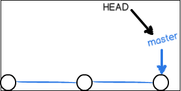
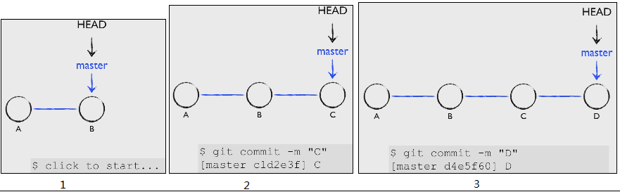
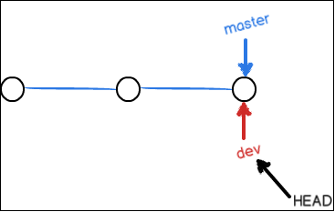
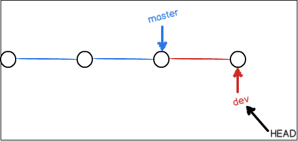

git分支管理
现在有了分支，就不用怕了。你创建了一个属于你自己的分支，别人看不到，还继续在原来的分支上正常工作，而你在自己的分支上干活，想提交就提交，直到开发完毕后，再一次性合并到原来的分支上，这样，既安全，又不影响别人工作。
其他版本控制系统如SVN等都有分支管理，但是用过之后你会发现，这些版本控制系统创建和切换分支比蜗牛还慢，简直让人无法忍受，结果分支功能成了摆设，大家都不去用。
但Git的分支是与众不同的，无论创建、切换和删除分支，Git在1秒钟之内就能完成！无论你的版本库是1个文件还是1万个文件。
创建与合并分支
在版本回退里，你已经知道，每次提交，Git都把它们串成一条时间线，这条时间线就是一个分支。截止到目前，只有一条时间线，在Git里，这个分支叫主分支，即master分支。HEAD严格来说不是指向提交，而是指向master，master才是指向提交的，所以，HEAD指向的就是当前分支。
一开始的时候，master分支是一条线，Git用master指向最新的提交，再用HEAD指向master，就能确定当前分支，以及当前分支的提交点：

每次提交，master分支都会向前移动一步，这样，随着你不断提交，master分支的线也越来越长：

当我们创建新的分支，例如dev时，Git新建了一个指针叫dev，指向master相同的提交，再把HEAD指向dev，就表示当前分支在dev上：

你看，Git创建一个分支很快，因为除了增加一个dev指针，改改HEAD的指向，工作区的文件都没有任何变化！
不过，从现在开始，对工作区的修改和提交就是针对dev分支了，比如新提交一次后，dev指针往前移动一步，而master指针不变：

假如我们在dev上的工作完成了，就可以把dev合并到master上。Git怎么合并呢？最简单的方法，就是直接把master指向dev的当前提交，就完成了合并：

所以Git合并分支也很快！就改改指针，工作区内容也不变！
合并完分支后，甚至可以删除dev分支。删除dev分支就是把dev指针给删掉，删掉后，我们就剩下了一条master分支：

真是太神奇了，你看得出来有些提交是通过分支完成的吗？


下面开始实战。
首先，我们创建dev分支，然后切换到dev分支：
1 | git checkout -b dev |
git checkout命令加上-b参数表示创建并切换，相当于以下两条命令：
1 | git branch dev |
然后，用git branch命令查看当前分支：
1 | git branch |
git branch命令会列出所有分支，当前分支前面会标一个*号。
然后，我们就可以在dev分支上正常提交，比如对readme.txt做个修改，加上一行：
1 | create new branch dev.. |
然后提交：
1 | git add readme.txt |
现在，dev分支的工作完成，我们就可以切换回master分支：
1 | git checkout master |
切换回master分支后，再查看一个readme.txt文件，刚才添加的内容不见了！因为那个提交是在dev分支上，而master分支此刻的提交点并没有变：

现在，我们把dev分支的工作成果合并到master分支上：
1 | git merge dev |
git merge命令用于合并指定分支到当前分支。合并后，再查看readme.txt的内容，就可以看到，和dev分支的最新提交是完全一样的。
注意到上面的Fast-forward信息，Git告诉我们，这次合并是“快进模式”，也就是直接把master指向dev的当前提交，所以合并速度非常快。
当然，也不是每次合并都能Fast-forward，我们后面会讲其他方式的合并。
合并完成后，就可以放心地删除dev分支了：
1 | git branch -d dev |
删除后，查看branch，就只剩下master分支了：
1 | git branch |
因为创建、合并和删除分支非常快，所以Git鼓励你使用分支完成某个任务，合并后再删掉分支，这和直接在master分支上工作效果是一样的，但过程更安全。
小结
Git鼓励大量使用分支：
查看分支：git branch
创建分支：git branch <name>
切换分支：git checkout <name>
创建+切换分支：git checkout -b <name>
合并某分支到当前分支：git merge <name>
删除分支：git branch -d <name>
解决冲突
人生不如意之事十之八九，合并分支往往也不是一帆风顺的。
准备新的feature1分支，继续我们的新分支开发：
1 | git checkout -b feature1 |
修改readme.txt最后一行，改为：
1 | create new branch feature1.. |
在feature1分支上提交：
1 | git add readme.txt |
切换到master分支：
1 | git checkout master |
Git还会自动提示我们当前master分支比远程的master分支要超前1个提交。
在master分支上把readme.txt文件的最后一行改为：
1 | goback master.... |
提交：
1 | git add readme.txt |
现在，master分支和feature1分支各自都分别有新的提交，变成了这样：

这种情况下，Git无法执行“快速合并”，只能试图把各自的修改合并起来，但这种合并就可能会有冲突，我们试试看：
1 | git merge feature1 |
果然冲突了！Git告诉我们，readme.txt文件存在冲突，必须手动解决冲突后再提交。git status也可以告诉我们冲突的文件：
1 | git status |
我们可以直接查看readme.txt的内容：
1 | test git modify second |
Git用<<<<<<<，=======，>>>>>>>标记出不同分支的内容，我们修改如下后保存：
1 | test git modify second |
再提交：
1 | git add readme.txt |
现在，master分支和feature1分支变成了下图所示：

用带参数的git log也可以看到分支的合并情况：
1 | git log --graph --pretty=oneline --abbrev-commit |
最后，删除feature1分支：
1 | git branch -d feature1 |
小结
当Git无法自动合并分支时，就必须首先解决冲突。解决冲突后，再提交，合并完成。
用git log --graph命令可以看到分支合并图。